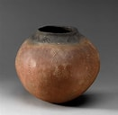
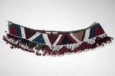

Woven Basket

The above craft shows a woven basket it is mostly designed by Basotho women using materials such as grass and reeds to create a beautiful and eye catching basket,and they are sometimes decorated by excellent patterns and designs.
Pottery
This is a pottery it is designed using clays and other techniques,They use natural materials like wood ash and plant dyes to create unique glazes.This pottery is known for its earthy tones and traditional techniques.
Beadwork
Basotho beadwork is a vibrant and colorful craft used to adorn jewellery,clothing and other decorative items.It is often known for featuring interesting patterns and designs using a variety of colors and techniques.This craft is mostly worn by women and girls.